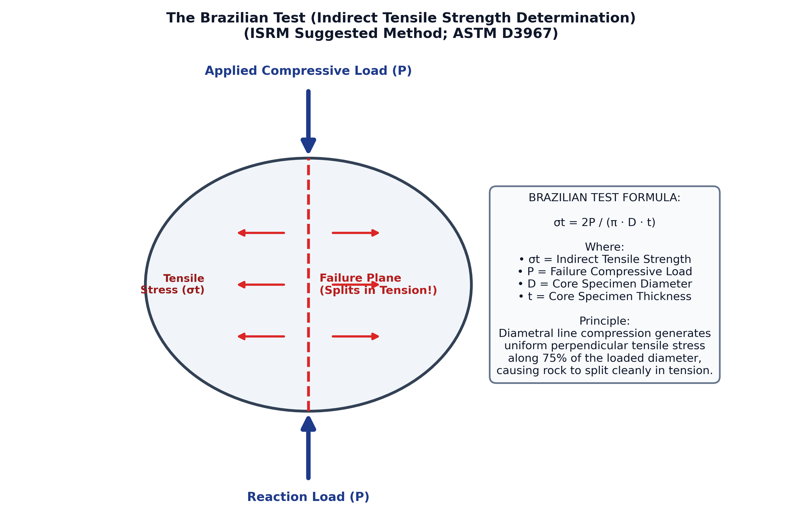

In experimental rock mechanics (ISRM Suggested Methods, Bieniawski & Hawkes 1978; ASTM D3967), determining the tensile strength ($\sigma_t$) of rock by direct pull is experimentally difficult because clamping rock core ends inevitably induces parasitic bending stresses and stress concentrations, causing specimen failure at the grips rather than in tension within the gauge section.
The Brazilian Test (Indirect Tensile Strength Test) overcomes this challenge by subjecting a circular cylindrical rock disc (diameter $D$, thickness $t$) to diametral line compressive loading ($P$):
The indirect tensile strength ($\sigma_t$ or $\sigma_B$) is calculated directly from the peak compressive failure load ($P$) via the formula:
Therefore, the Brazilian test is specifically designed and used to determine (b) Tensile strength.

For an elastic, homogeneous, isotropic circular disc of diameter $D$ and thickness $t$ compressed across a diameter by line load $P$, the stresses along the loaded diameter ($y$-axis) are given by:
Throughout the central region ($-0.75 R < y < +0.75 R$), $\sigma_x$ is positive (tensile) and virtually constant. When this tensile stress reaches the intrinsic tensile strength of the rock material, Griffith tensile microcracks propagate vertically from the center outward, splitting the disc into two halves.
| Strength Property | Standard Laboratory Test | Loading Mode & Specimen Geometry | Key Governing Parameter |
|---|---|---|---|
| Tensile Strength ($\sigma_t$) | Brazilian Test (ISRM / ASTM D3967) | Diametral line compression on thin disc ($t/D \approx 0.5$) | $\sigma_t = \frac{2P}{\pi D t}$ (Option b — Target) |
| Crushing / Compressive Strength ($\sigma_c$) | Uniaxial Compressive Strength (UCS) | Axial compression on cylindrical core ($L/D = 2.0\text{--}2.5$) | $\sigma_c = P / A$; measures bulk crushing resistance. |
| Transverse / Flexural Strength ($\sigma_f$) | Four-point / Three-point Bending Test | Transverse bending load applied on rock prism beam | Modulus of rupture $R = \frac{3PL}{2bd^2}$. |
| Shear Strength ($\tau$) | Direct Shear Box / Triaxial Test | Shear displacement across predefined plane or Mohr-Coulomb failure envelope | Cohesion ($c$) and Internal Friction Angle ($\phi$). |